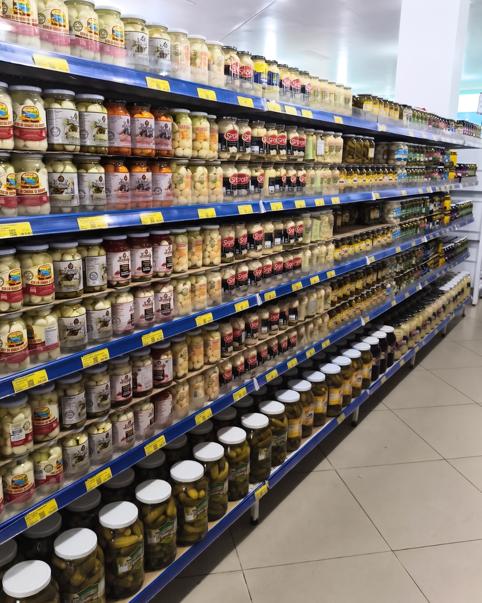

Relatórios genéricos que não geram ação
Você recebe planilha bonita toda semana, mas não sabe o que mudou no PDV, nem o que fazer com aquela informação.
Sua marca merece mais do que promotor terceirizado comum. Aqui em Santa Catarina, a FJ Merchandising opera com método próprio, equipe formada e resultados mensuráveis há três décadas.
Conversa de 30 minutos com nosso fundador. Sem compromisso.
Os problemas mais comuns que recebemos de indústrias antes de virarem clientes:
Você recebe planilha bonita toda semana, mas não sabe o que mudou no PDV, nem o que fazer com aquela informação.
Mão de obra trocando toda hora, sem treinamento real, executando sem padrão. O resultado some na hora que a equipe muda.
Empresas nacionais aplicam a mesma receita em todo lugar. Mas o varejo catarinense tem comportamento próprio que só quem está aqui há tempo enxerga.
Como transformamos sua presença no PDV em sell‑out mensurável
Mapeamos sua operação atual no varejo catarinense: gôndolas, fluxos, comportamento de shopper, gaps de execução.
Construímos um plano de ação específico para sua marca, com metas claras de execução e indicadores de sell‑out.
Alocamos promotores treinados em nossa metodologia, com supervisão de campo e padrão de execução consistente.
Relatórios objetivos com decisões acionáveis. Você sabe o que está funcionando, o que ajustar, e por quê.
O varejo catarinense tem particularidades que empresas nacionais nunca vão entender no detalhe. Comportamento de compra regional, redes locais com peso próprio, sazonalidades específicas, relacionamento de longo prazo com pontos de venda. A FJ Merchandising está aqui há 30 anos justamente porque entende esse mercado por dentro — não como visitante, mas como parte dele.

Padrão consistente de execução, todo dia, em todo PDV.
Relatórios claros, prazos cumpridos, contas que fecham.
Promotores formados, valorizados e com carreira no PDV.
Tratamos sua marca como se fosse nossa. Porque o resultado é compartilhado.
O varejo muda. Nosso método evolui junto.
Agende uma conversa de 30 minutos com o Fábio, fundador da FJ. Sem compromisso, sem custo, com método.
QUERO AGENDAR MEU DIAGNÓSTICO →